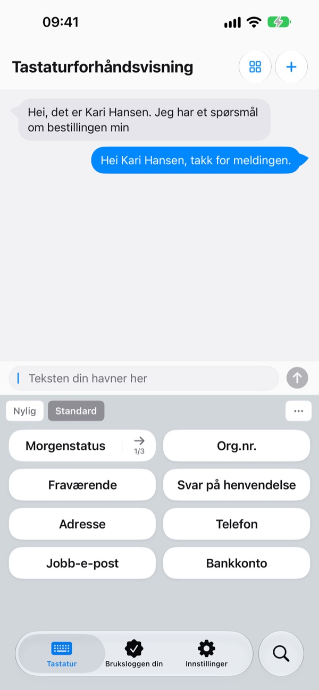
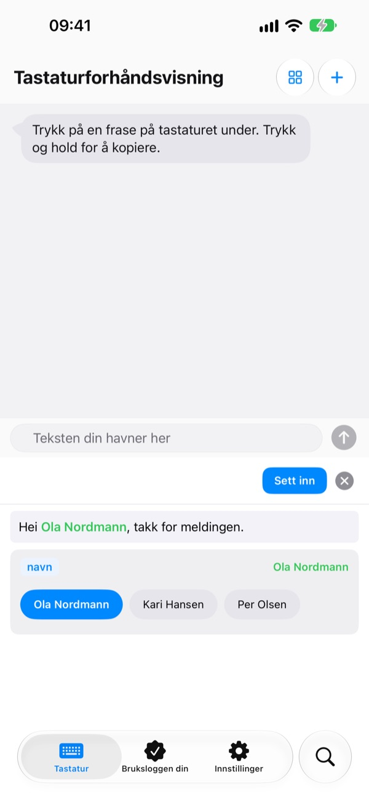
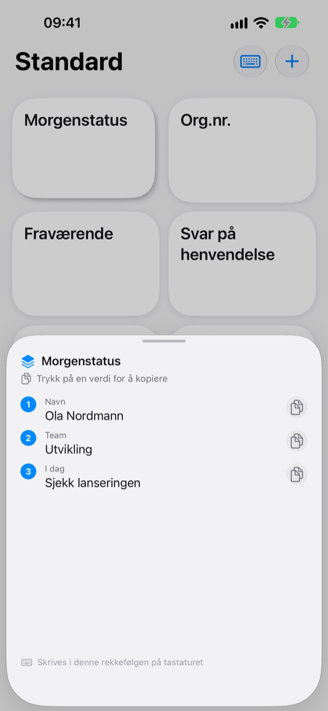
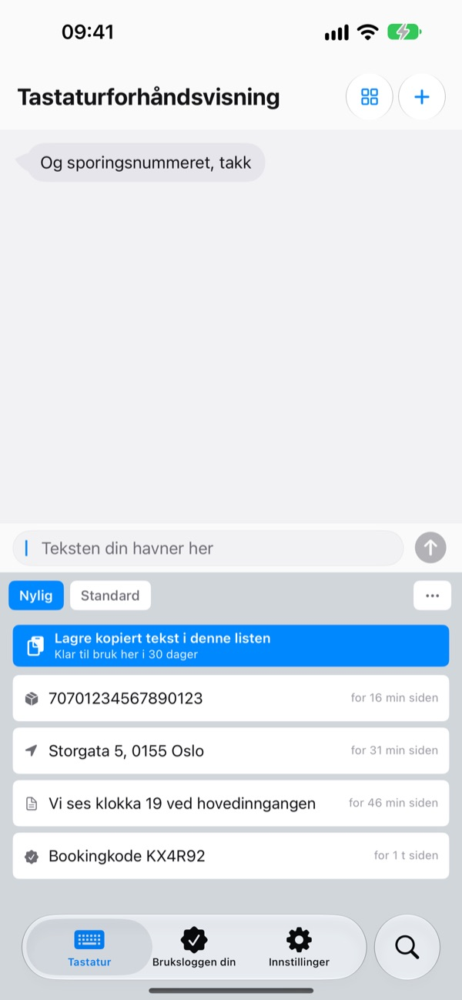
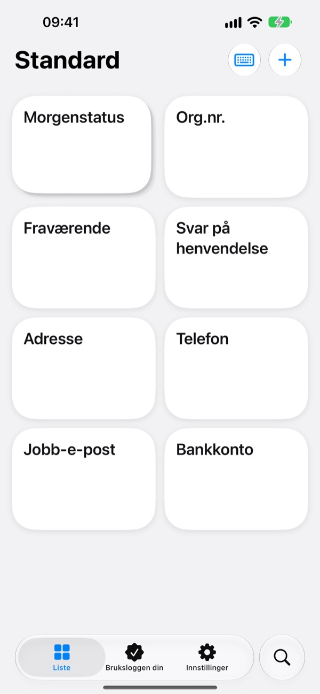

Slutt å skrive
det samme om igjen
Lagre kontonummeret, adressen eller den faste e-postinnledningen din én gang. I Meldinger, Mail, Safari og overalt ellers der du skriver, er de ett trykk unna på tastaturet.
Alle funksjoner er gratis de 100 første innsettingene.

Prøv det her
Dette er appens egen Tastaturforhåndsvisning. På iPhonen dukker dette tastaturet opp overalt der du kan skrive.
Hvor mange ganger har du skrevet kontonummeret ditt i dag?
En venn lurer på hvor de skal sende sin del, så du åpner bankappen og kopierer nummeret. Etterpå taster du leveringsadressen bokstav for bokstav, nok en gang, og skriver den samme hilsenen i hver e-post til kunder. ClipKeyboard holder disse linjene klare på tastaturet, ett trykk unna.
Fyll bare inn det som endres
Maler lar delene som endrer seg, som {navn} eller {dato}, stå som tomme felt.
Når du setter inn en mal, spør den bare etter feltene, og du kan velge en verdi du har brukt før.

Flere verdier, i rekkefølge
En stabel samler flere verdier, for eksempel navn, team og dagens oppgave, på én tast.
Trykk for å sette inn gjeldende plass, og gå til neste med pilen ved siden av.

Det du kopierer, ligger også på tastaturet
Sporingsnummeret, adressen eller telefonnummeret du nettopp kopierte, havner i Nylig-fanen på tastaturet.
E-postadresser, telefonnumre, adresser, kortnumre og IBAN blir gjenkjent og sortert, så du finner dem igjen på et sekund.

Lås inne det sensitive
Gjør pass- og kortnumre om til sikre fraser som er låst med Face ID.
Har du et kontonummer på papir? Ta et bilde og dra fingeren over akkurat de tegnene du trenger.

Kom i gang i tre steg
- 1
Legg til tastaturet
Innstillinger > Generelt > Tastatur > Tastaturer > Legg til nytt tastatur, og velg ClipKeyboard.
- 2
Tillat full tilgang
Tastaturet trenger det for å lese frasene du har lagret i appen. Det du skriver, forlater aldri enheten din.
- 3
Hold på kloden for å bytte
Hold inne 🌐 på tastaturet i en hvilken som helst app, velg ClipKeyboard og trykk på en tast.
Dette kan du ha på tastaturet
- Frase
- Setter inn akkurat det du har lagret, også linjeskift og emoji.
- Mal
- Felt i klammeparenteser, som {navn}, fylles ut hver gang du setter den inn.
- Stabel
- Flere verdier på én tast. Pilen går videre til neste plass.
- Sikker frase
- Settes inn først etter Face ID eller Touch ID. (Pro)
- Bildefrase
- Trykk for å kopiere bildet, og lim det inn i meldingen.
- Utklippstavle-logg
- Tar vare på det du kopierer, sortert etter type og klart til bruk igjen.
- Skann inn tekst
- Sveip over tekst i et bilde for å hente bare den delen. Bildet lagres ikke.
Hele brukerveiledningen finner du på m1zz.github.io/ClipKeyboard/nb/tutorial.html.
Bruk den 100 ganger, og bestem deg etterpå
Gratis
- Alle funksjoner til du har satt inn fraser 100 ganger
- Alt du har laget, fungerer fortsatt etterpå
- Nye elementer: opptil 10 fraser, 3 maler, 3 stabler og 5 bilder
- 50 elementer i utklippstavle-loggen
Plus · Pro
- Plus: ubegrenset med fraser, maler, stabler og bilder, 100 elementer i utklippstavle-loggen
- Pro: alt i Plus, i tillegg til iCloud-sikkerhetskopi, Face ID-lås og synkronisering mellom enheter (beta)
Begge fås som årsabonnement eller som et engangskjøp som gjelder for alltid.
Frasene dine slettes aldri, heller ikke om du ikke betaler eller et abonnement utløper. Ingen reklame.
Spørsmål
Frasene mine vises ikke på tastaturet.
Full tilgang er trolig slått av. Gå til Innstillinger > Generelt > Tastatur > Tastaturer > ClipKeyboard og slå på Tillat full tilgang.
Kan jeg beholde tastaturet jeg bruker nå?
Ja. Når en frase er satt inn, bytter ClipKeyboard tilbake til tastaturet du brukte, og det kan slås av i innstillingene. Du kan også skrive med selve ClipKeyboard: det har taster som på iPhone på 23 språk.
Kan jeg skrive japansk eller kinesisk?
Japansk opp til kana og kinesisk opp til pinyin og zhuyin. Omgjøring til kanji og hanzi finnes ikke ennå.
Det jeg kopierer, dukker ikke opp i loggen.
iOS hindrer andre apper i å lese utklippstavlen på egen hånd. Åpne appen én gang og bruk deretter tastaturet, så dukker det opp.
Hvordan sletter jeg verdier som er lagret for en mal?
Trykk på et felt i malredigeringen for å se de lagrede verdiene. Sveip på en verdi for å slette den.
Hva skjer etter 100 innsettinger?
Alle frasene, malene og stablene du har laget, fungerer fortsatt. Gratisgrensene gjelder bare nye elementer. Velg Plus eller Pro hvis du vil fjerne dem.
Blir frasene mine sendt noe sted?
Nei. De lagres på denne enheten, og vi samler ikke inn innholdet. Med iCloud-sikkerhetskopi slått på lagres de kryptert i din egen iCloud. Vi samler bare inn anonym bruksstatistikk for å forbedre appen og bruker ingen analyseverktøy fra tredjeparter.
Hva gjør jeg når jeg får ny telefon?
Med iCloud-sikkerhetskopi fra Pro slått på gjenoppretter du på den nye enheten med samme Apple-konto. Bildefraser blir også med. Gjenopprettingen erstatter frasene som allerede ligger på enheten.
Fungerer det på iPad?
Ja, både på iPhone og iPad.
Problemet mitt står ikke her.
Send oss en e-post nedenfor og fortell hva som skjedde. Vi svarer som regel innen et døgn.
Spørsmål eller tilbakemeldinger? Skriv til leeo@kakao.com.